2.4 Vs code安装与配置
VS Code（Visual Studio Code）是微软推出的一款轻量级代码编辑器，具有免费、开源和高扩展性的特点。它支持多种主流编程语言，提供语法高亮、智能代码补全、快捷键定制、代码片段管理、代码差异对比（Diff）以及 Git 版本控制等功能。通过丰富的插件生态，VS Code 可以灵活扩展功能，并对现代软件开发场景进行了良好适配。该编辑器支持 Windows、macOS 和 Linux 等主流操作系统。
同样的输入这段代码
wget http://fishros.com/install -O fishros && . fishros
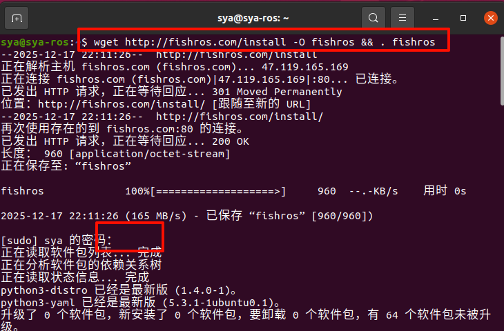
输入7
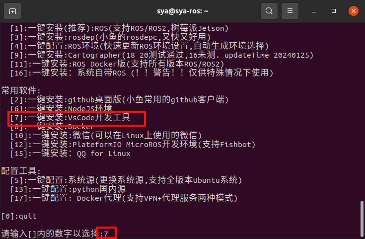
接着等待即可
可能有的同学会遇到这样的问题，输入Y即可
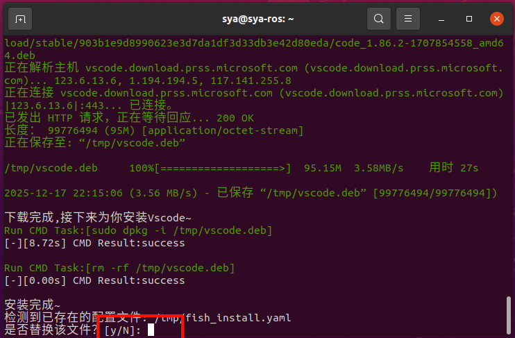
即可再工作台中看到下载好的Visual Studio Code
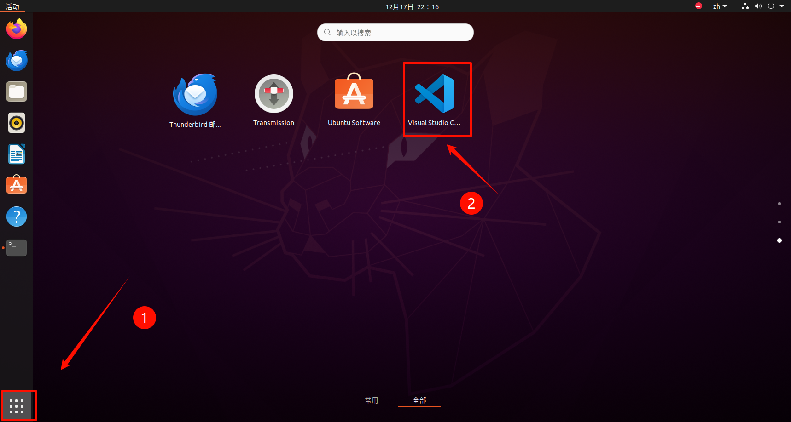
打开之后我们将其固定到收藏夹当中，以后打开会方便很多
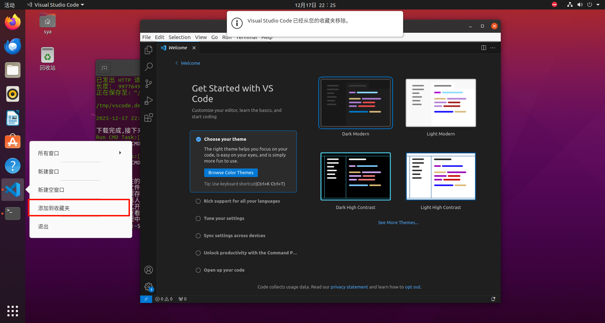
接下来我们配置一下
主要是安装以下几个插件中文、ROS 1 插件（Robot Developer Extensions for ROS 1）、Cmake Tools
| 插件 | 作用 |
|---|---|
| ROS 1 插件 | ROS 包识别、节点启动、语法提示 |
| CMake Tools | catkin 工程编译与调试 |
| 中文语言包 | 新手友好（可选） |
再vscode的左侧位置选择插件安装、并在搜索栏中找到自己所需要的插件即可
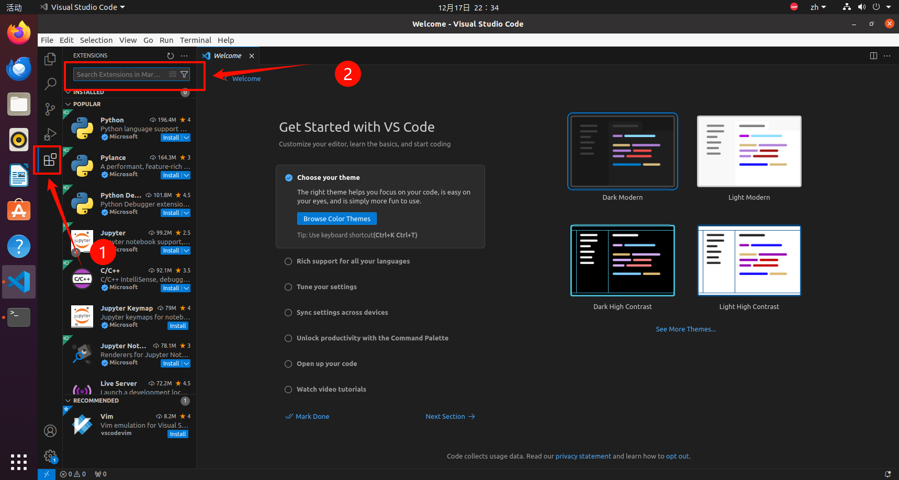
首先是中文插件（ 基础好的同学可以跳过），在搜索栏中输入chinese，并选择该插件进行安装
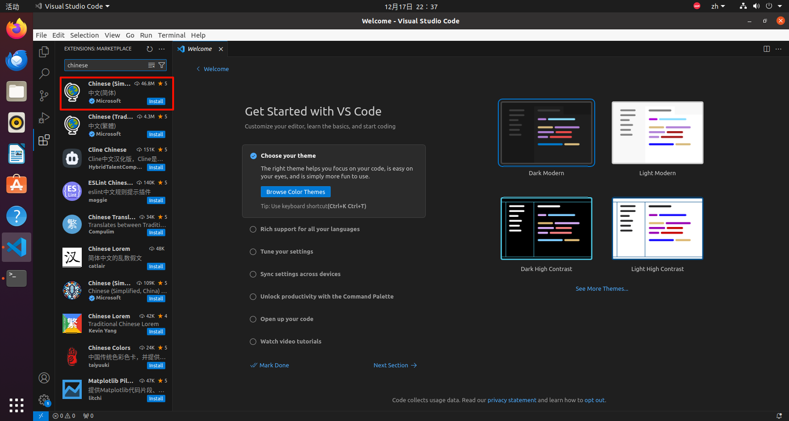
在安装完之后，会让我们重启vscode，点击该按钮即可
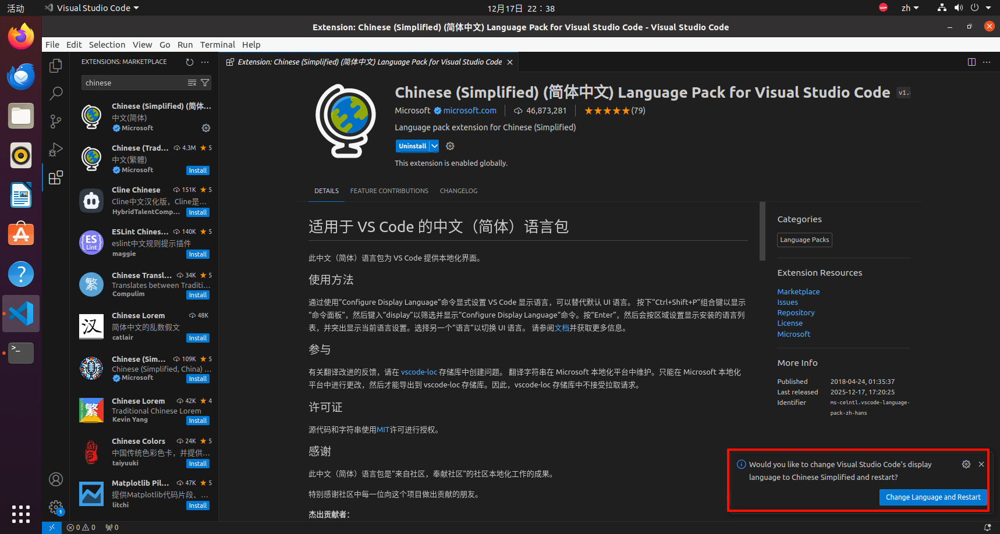
重启后可以看到，已经更改成功
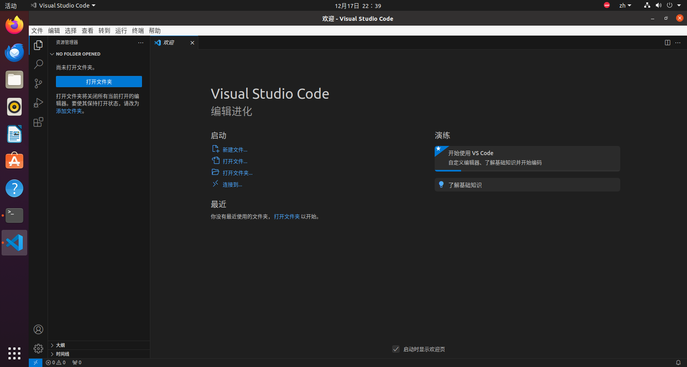
我们这里安装这个Robot Developer Extensions for ROS 1，这个版本能更好的支持我们这个版本的NOETIC和ROS1
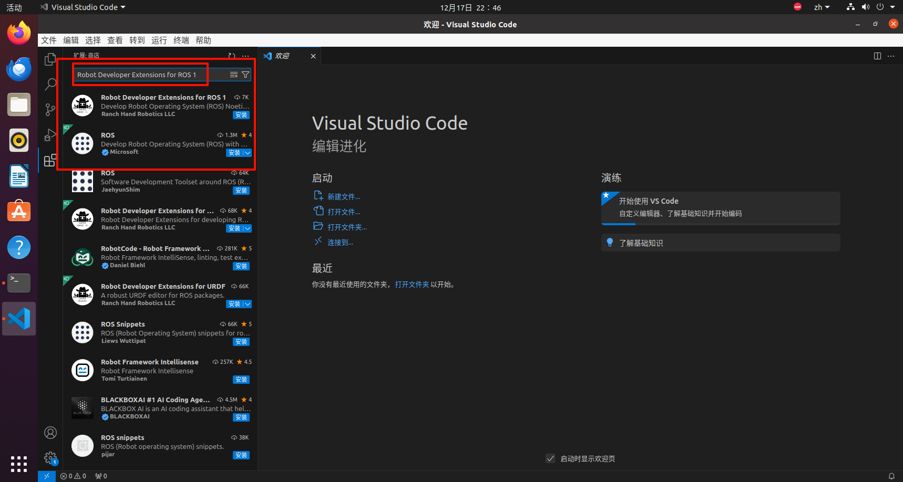
用同样的我们安装CMake Tools
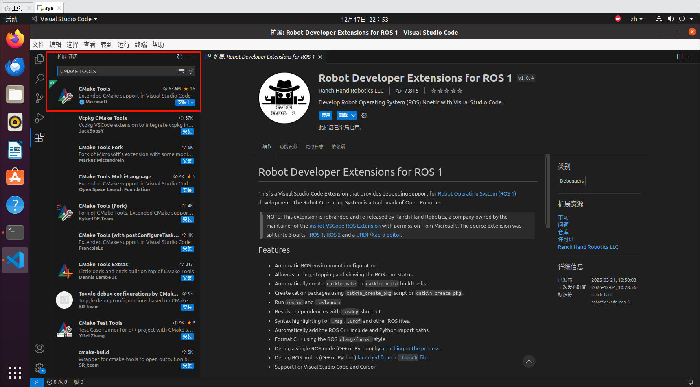
至此，我们基本的所有的前期准备工作已经就位，接下来的我们未来的视频也都会为大家介绍ROS的详细教程与我们安装的这些插件有什么具体的作用。